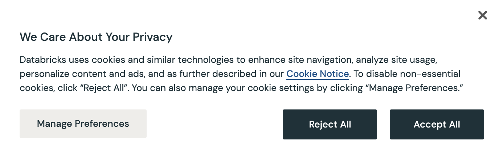
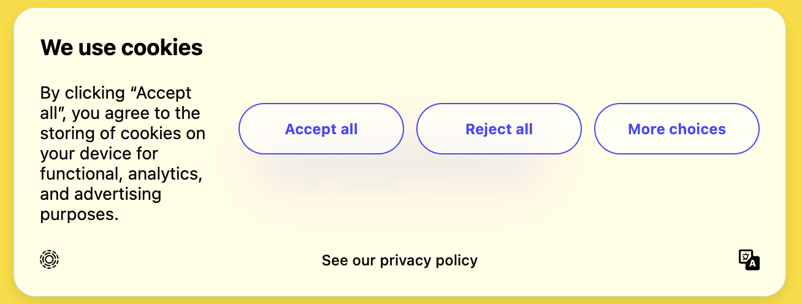
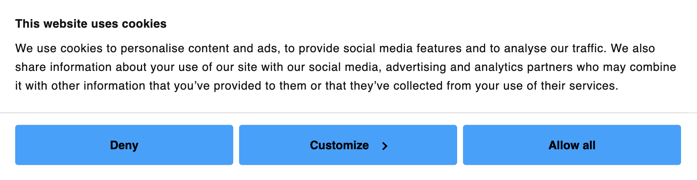
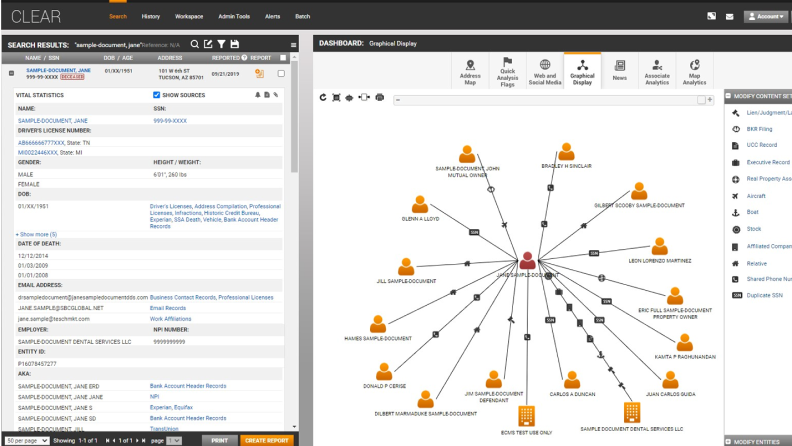
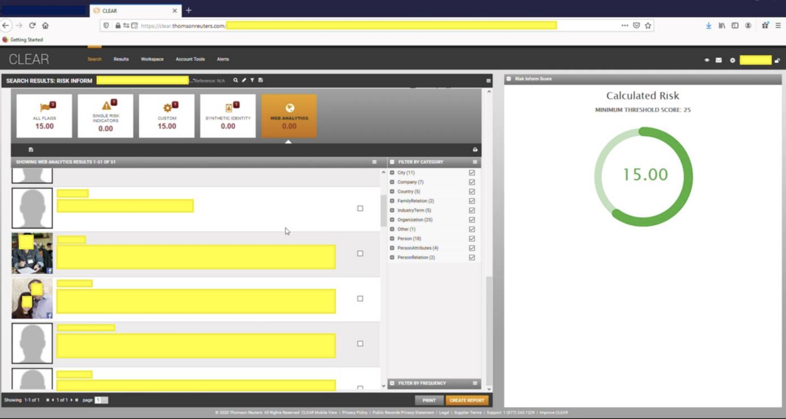

You can choose which categories of cookies you allow. Note that disabling some types of cookies may impact your experience, and we'll also be really sad.
Just by existing in modern America, all the information you generate ends up in a searchable dossier for anyone to buy. This is completely legal.
Let's say that every Wednesday night, your friends host a board game night in their building, about a ten minute drive away from your apartment in Brooklyn. Even though you could take the subway home, you always end up a little too tired to do the three transfers, and an Uber comes out to less than $10 — so more often than not, you splurge for the rideshare home.
It's a weekly get-together, mundane and comfortable, a break away from your work life and responsibilities. It's supposed to stay just that: a personal, private routine.
But someone else knows about it.
They know because last Wednesday, at 8:47 PM, your phone connected to a cell tower two blocks from your friends' address. They know because the Wednesday before that, and the one before that, your Uber app requested a pickup from the same corner at roughly the same time — and Uber, like most apps you've downloaded without a second thought, shares location data with third-party partners. They know what you look like because a license plate reader camera on Atlantic Avenue logged your friend's car, which you were in, and cross-referenced it against a database of registered vehicles tied to known associates.
None of the companies that collected any of this information are the government. None of them did anything illegal. Most of them told you exactly what they were doing, in a privacy policy you agreed to likely without reading, on a website you visited once to RSVP to a birthday party.
Somewhere, in a database you will never see and cannot opt out of, all of this has been assembled into a file. It has your name at the top. It knows where you'll probably be next Wednesday at 8:47 PM.
And it is for sale.
I started thinking about all of this because I got scared.
In 2025, stories began surfacing about people being stopped on their way to work by Immigration and Customs Enforcement, or picked up outside courthouses, or detained at the airport after years of living quietly in the same city. To meet the Trump administration's goal of 3,000 immigrant arrests a day, ICE agents loiter in Home Depot parking lots, knock on residential doors, and patrol city streets with loaded firearms. The biggest question on my mind quickly became, "How is ICE finding who to detain? Is it a foolproof system?"
The answer to the first question is straightforward: Law enforcement agencies like ICE have access to digital tools that can reduce a person's entire life to a tidy, searchable file. Not just their name and address and Social Security Numbers, but their routines. Their credit score and spending habits. All without getting a warrant.
To understand how, you have to go back to a moment you've already forgotten — probably several hundred of them.
When this web page loaded, there was a pop-up that you likely accepted. There was no reason to give it a second look — you've probably dismissed thousands of them across your browsing history. Do you remember what it read? Refresh the page if you'd like to see it again.
Don't worry if you accepted it the first time; this site won't do any of that. But the thing is, it could.Millions of company websites offer the same disclaimer, always some variation of We use cookies or We care about your privacy or How we use your information. They describe cookies and similar tracking tools as necessary for advertising and functionality — which is true, but incomplete. Under certain state privacy laws, like California's Consumer Privacy Act, companies are required to disclose if they sell your personal information to third parties. Most do. The disclaimer you just clicked through was, in part, that disclosure.
That interaction isn't unique to websites. The same exchange happens every time you download an app, create an account, or tap "agree" without reading the tediously long Terms & Conditions. The format might look different — a pop-up becomes a checkbox, a banner becomes a full-screen prompt — but the underlying transaction is the same: access in exchange for data.



Without reading the fine print, you wouldn't learn that these websites collect more than just your browsing history on their platform. You definitely wouldn't know that most of what they gather — your location, your device, your behavior across the web — is sold. Quietly, legally, and without any notification to you.
The buyers? The data broker industry.
Data brokers are organizations that aggregate data — by purchasing it from companies or other data brokers — and sell access to it. The industry is worth an estimated $300 billion annually, and yet, you've almost certainly never interacted with one directly. That's more or less by design.
The information that data brokers have on you may sound relatively harmless. What can come of cookies collected from an academic paper publication? Or the restaurants you visit and log on a dining app?
"Much of the harm that comes from our data hanging around online comes from the connections and inferences made from it in combination with other data," Claire Pershan, Mozilla Foundation's EU Advocacy Lead, explains to me over email. She directs me to Mozilla Foundation's petition, No Data Against Surveillance Tech, which lists all the ways "seemingly innocuous data you share with an individual company can be stitched together to make a profile about you that could put you at risk."
GoFundMe + Etsy: Fundraisers for medical bills, legal aid, or immigration fees can indicate vulnerability — particularly for undocumented people, refugees, or activists needing support.
Duolingo + LinkedIn + Glassdoor: A user learning English or a regional language on Duolingo might be flagged if they also have a job history on LinkedIn or Glassdoor that suggests they recently moved or are working in an industry with high rates of undocumented labor.
Google + TripAdvisor + Yelp: Reviews, location data, and travel history can help create a pattern of movement. Used together, they can reveal where someone lives, works, or regularly travels — even if they never explicitly say it.
Thomson Reuters is one example of a data broker. Best known for its news division, it also operates a sprawling data services arm — Thomson Reuters Special Services (TRSS) — which offers a tool named CLEAR.

A screenshot of CLEAR's interface, taken from its official product page.
Type a name into CLEAR and within seconds you can pull up a subject's current and historical addresses, phone numbers, email accounts, employment history, vehicle registrations, professional licenses, court records, and known associates. It draws on billions of records updated daily — private and public alike — and presents all of it in a single, searchable profile.
One of the services CLEAR offers is a "risk inform score" generator, featured in a 2025 class action against Thomson Reuters, which compiles all known information about a subject to estimate a numeric risk score based on certain predictions. For example, CLEAR users can pull up an estimated association between a subject and getting an abortion (including "Abortional Act on Self"), or whether a subject would refuse to aid a police officer, and even whether the subject would engage in "Homosexual [Acts]."

A screenshot of CLEAR's risk score generator from the class action filing.
What could affect your risk score? Maybe your digital geolocation pinged you near an anti-war protest, even if you didn't participate. Maybe your browsing history included searches for mental health resources, or you donated to a charitable organization that the CLEAR algorithm considers politically sensitive. Maybe someone you emailed or messaged triggered a network association flagged by the system. Even your participation in online forums, social media posts, or attendance at certain public events could incrementally change your score.
This sounds really bad, but what are the actual implications of a predicted risk score? To find out, I email Jennifer Granick, an expert on cybersecurity and surveillance from the American Civil Liberties Union, and ask her what would happen if someone got a bad score in Homosexual Acts.
"It gives police a reason to go after someone they wouldn't otherwise have a reason to go for," Granick says. Under the Fourth Amendment, she explains to me, law enforcement officers — including both police and ICE agents — require 'probable cause' before they can obtain a warrant or make an arrest.
The problem is, 'probable cause' is a fuzzy legal term with no certain parameters, defined only as one step above 'reasonable suspicion,' which isn't much better off in clarity. Could these risk scores then constitute probable cause?
“We haven’t really dealt with that,” Granick admits, but points out that it would likely be a step up from current ICE protocols for finding detainees, which she sarcastically summarizes as “[getting] everybody at the Hyundai factory,” and “[getting] everybody in this neighborhood of Minneapolis, because they’re all probably illegally here from Somalia anyway.”
What’s worse is that tools like CLEAR may draw from data sources you thought truly private — your utility company and your credit card issuer, to name a few. Providers like ConEd describe their data policies as confidential, shared only with parties you explicitly authorize. But for thousands of utility companies, banks, lenders, and more, your personal information goes directly to credit bureaus like Equifax, Experian, or TransUnion.
Equifax, in particular, manages a utility database of over 217 million unique customers — and the credit bureau directly licenses with Thomson Reuters to give the data broker access to its utility database.
One other notable company that often employs the use of data brokers is Palantir, a data analytics company founded in 2003 with early backing from the CIA's venture capital arm. Palantir occupies a peculiar position in this ecosystem. Unlike CLEAR, which is itself a data product, Palantir doesn't primarily sell data, but instead the infrastructure to make data useful.
The most concrete example of what that looks like in practice is ELITE — Enhanced Leads Identification & Targeting for Enforcement — a Palantir tool built for ICE that populates a map with potential deportation targets, brings up a dossier on each person, and generates an address "confidence score" based on data sourced from the Department of Health and Human Services and other government agencies.
Using the app, ICE agents can select individual targets or draw a shape around a selected area on the map. In a sworn deposition, an officer with ICE's Fugitive Operations Unit confirmed that agents used ELITE to find "target-rich" areas — neighborhoods, essentially, where the algorithm predicted the highest concentration of detainable people. Among the data sources feeding those confidence scores? Medicaid records, DMV files, utility bills, and court records.
“It’s a big problem that government authorities hold large amounts of personal data; the more data they hold, the more it can be misused,” Daniel Berntsson, co-founder of the privacy-centered VPN company Mullvad VPN, tells me in an email, “but it can also often be difficult to protect oneself against this, since there are many registers that you must be part of where you have no choice.”
There are certain court cases that institute specific digital privacy protections. In Riley v. California, for example, it was established that police aren't allowed to go through your cell phone without a warrant. Carpenter v. United States extended that logic, ruling that the government generally needs a warrant to access cell location history from your phone provider.
"Statutes can protect privacy, and we have a bunch of [specific] statutes," Granick explains. "We have a health privacy statute, we have a privacy statute for children, we have a video rental privacy statute from the olden days when you go into a store and rent video cassettes and stuff."
However, these protections aren't comprehensive.
"The Fourth Amendment is our main constitutional protection, and it's really important because constitutional privacy protections apply across the board," Granick says. This is great news.
"But the Fourth Amendment only applies to government searches and seizures," she adds. "When the data brokers get all your information, the Fourth Amendment doesn't apply, because they're not the government." This information is less great. I find myself wondering if we could trade in the cassette rental statute for something more useful against data brokers.
"There's no expectation of privacy in your materials when they're held by third parties, which is the third-party doctrine," Granick continues. "So when the government comes for it, you could say it's a search; but when the government gets it from a third party, you don't have the expectation of privacy."
The third-party doctrine allows data brokers to operate not only as they were, but with the additional possible backing of federal and state governments — becoming, in effect, a privatized surveillance infrastructure that the government can purchase access to without ever triggering Fourth Amendment scrutiny. Or, in simpler terms, as I confirm with Granick:
"So it's not legal for [police] to go, 'Let me see your phone and what's in it'," I say, "but it's legal for them to go, 'I'm going to now buy the database that has everything in your phone and also everything that's in millions of people's phones'?"
A pause.
"Mhm," Granick says.
"Okay. Cool. Great."
Suddenly, ICE's contracts with Thomson Reuters and Palantir make a lot more sense. As William Owen, Communications Director at the Surveillance Technology Oversight Project (STOP), put it to me during a later call, "These companies end up providing ICE a back door to sidestep local sanctuary laws."
… is what you might be thinking, or at least something along those lines. You wonder why you should be worrying about any of this if you're not an undocumented immigrant, or a criminal, or anyone that could draw the ire of law enforcement. This surveillance doesn't affect you, after all.
The reality is that, yes, it doesn't affect you. For now.
These tools by Thomson Reuters and Palantir exist regardless of who uses them. Right now, ICE is using these tools to target immigrants in pursuit of a deportation quota, but that could very easily change. The next majority party could run on an anti-firearm platform, for example, and CLEAR — which has a section in its risk inform scores all about "Weapons Offenses" — could be used to monitor and negatively label those who own guns.
Besides, you should be concerned about your baseline right to privacy, because it's not as one-dimensional as the ability to change your clothes without someone looking, or knowing that if you delete your browsing history it's gone for good. As Marianna Poyares — a post-doctoral researcher at the Georgetown Law Privacy Center — puts it, privacy is the backbone to democracy.
“No democracy can function without privacy rights,” Poyares says. “Democratic life is, in fact, affected if you think that your personal, private data is constantly being harvested, being collected and analyzed, feeding into algorithms that are labeling you as X, Y, and Z.”
This concern isn't hypothetical. When people know, or even just suspect, that they're being watched, they change their behavior. You've done it before! Maybe it's when you instinctively closed your tab on your laptop when you thought you heard someone walk up behind you. Maybe you avoid looking up certain terms or phrases because you're worried the FBI agent tapping your phone will raise an eyebrow.
“The reality is,” Poyares says, “[democracy requires] the ability of people to just exist, gather, and speak without fear of intimidation, or fear of an algorithm putting a label on them.”
There are actions we can take at an individual level to minimize the extent of information data brokers get from us. Saying no to cookies is a start, as well as clicking Do Not Sell My Information. As Berntsson puts it, "The mass surveillance carried out by private companies can be limited through VPN services, privacy-focused browsers, and by opting out of services that track you. But most people do not do this," he adds.
However, as we've established, there are services we can't opt out of. To fix that, we need to go a level up. Mozilla Foundation's Claire Pershan is one of many privacy experts that agree that data privacy needs to start with the companies giving our information away.
"The business of data brokers should simply not exist," Pershan asserts. "But as long as it does, that moves the burden over to companies to handle our data with care."
Ultimately, though, companies can only do so much. For privacy protections to be sweeping and comprehensive, something has to happen at the legislative level.
"As the surveillance state continues to grow at a rapid pace, it'll put together an unprecedented amount of data," Owen says. "It's up to lawmakers to ensure that Americans are protected from invasive spying. And it's also up to companies to ensure that they protect customers from the federal government, to not collect or retain the data that will then be used for surveillance."
But if it's government agencies who profit from a lack of privacy legislation, how can we rely on them to protect us? How can we change their mind?
"There's another angle for it, which is political activism," Granick tells me, as I stew in the wake of her legal explanations. "When people get together and oppose something, it matters. I mean, that was the basis of the civil rights movement, and it's a basis here, too."
You have more say in this than you realize. It's your money that funds these private companies, your data that they collect, your vote that chooses your representative. Knowing about the existence of data brokers already gives you a big advantage over them, who rely on your ignorance to operate without scrutiny, without regulation, and without consequence.
“Right now, we’re seeing regular people who are going, ‘What the hell?’” Granick says. “And I think that really matters — and really makes a difference.”
(Or back to quinnmadethis.com.)